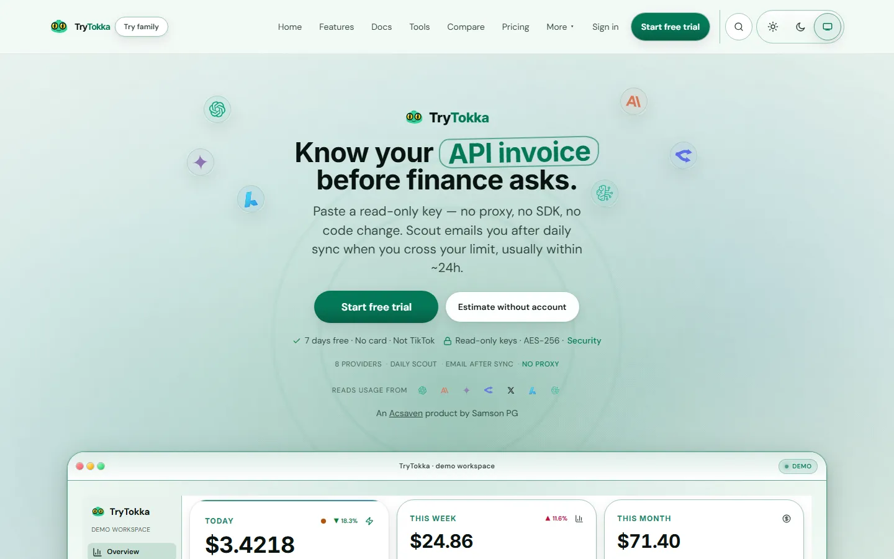

Desktop capture of the live homepage (1440px). Scales to any screen — this is the offline original look.
Multi-provider
Pull usage from the AI APIs you already pay for.
Budgets & alerts
Know when spend drifts before the invoice lands.
Privacy-first
Focused SaaS — not a surveillance dump.
More visuals


Fallback for when the live domain is down. Not a working app — the screenshot is the truth.
© 2026 Samson P G · Homepage archive